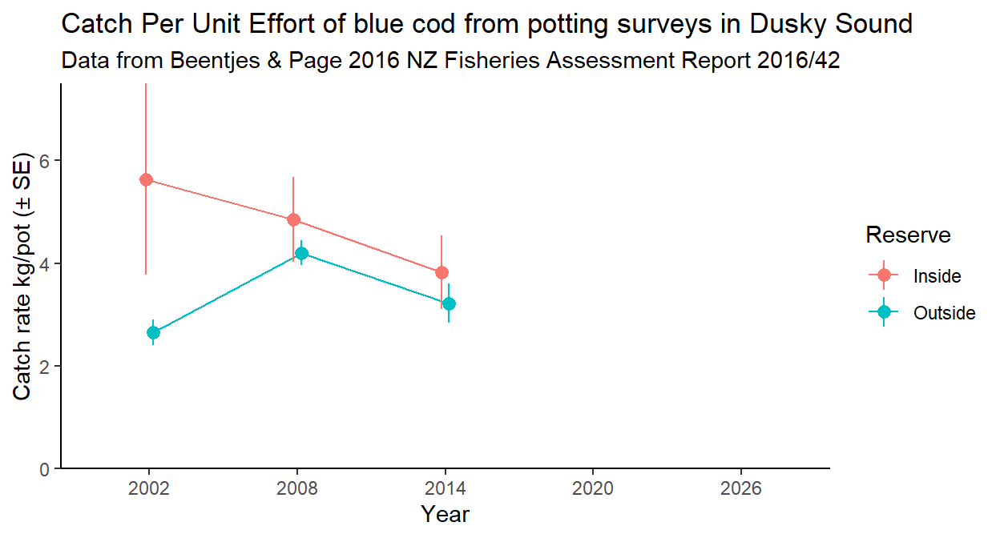

Non-Destructive Marine Monitoring in Fiordland
with Baited Remote Underwater Video (BRUV)
Acknowledgements
- Supporters and funders:
- Fiordland Marine Guardians
- Department of Conservation
especially Rich Kinsey - Ministry for Primary Industries
Jean Davis, Mark Geytenbeek, Rob Win
- Skippers and crew of the Southern Winds
Miriam MacFadgen, Pete Kirkman, Richard Kinsey, Ross Funnell, Millie Mannering - Other helpers in the field
Odette Howarth, C. Robert Priester, Jenni Stanley - Annotators
Odette Howarth, Alex Burton

Protecting fish stocks

- Broad agreement that it is the right thing to do
- Requires appropriate management
- Need good information on:
- the current status of populations
- trends through time
- But… counting fish ain’t easy!
- Many methods are available

Which methods are appropriate?
Depends entirely on the context:
- Objectives
- Costs and budget
- Constraints of the physical environment and organisms’ biology
- Impacts of the method on the populations and broader ecosystem
- Quality and quantity of information provided by the method
Blue cod potting


- In the 2014 survey, 1799 blue cod
were captured (1237 kg; 96% killed) - Non-neglible losses for a sensitive,
low-productivity ecosystem - No potting survey since 2014
?
Blue cod potting
- In the 2014 survey, 1799 blue cod
were captured (1237 kg; 96% killed) - Non-neglible losses for a sensitive,
low-productivity ecosystem - No potting survey since 2014

Blue cod potting

What is a ‘Stereo BRUV’?

- After calibration with a specialist cube and software,
What is a ‘Stereo BRUV’?

- After calibration with a specialist cube and software,
stereo BRUVs allow for accurate measurements of lengths.
The BRUV process


Abundance of blue cod
Presence of tarakihi

Presence of school shark


Presence of crayfish

Presence of hāpuku


Presence of black coral

Advantages of BRUVs
- Cost-effective
- Non-destructive, non-lethal
- Globally established methodology
- Standardised observation period (60 min)
- Broad depth range
- Captures a wealth of information on multiple species, size-classes, and habitats
- Permanent video archive

Disadvantages of BRUVs

- Some upfront expenses (hardware and software)
- Lack of historical baseline data in Fiordland
- Cannot tell the sex of non-sexually dimorphic species (e.g., blue cod)
Recommendations

Ongoing monitoring of Tamatea/Dusky Sound using BRUVs (ideally every 1-3 years)
Annotation of the 2021 BRUV data (at least for sites repeated in 2024)
Statistical analysis and reporting for key species
Comparison of potting data with BRUV data
Exploration of the potential for BRUVs and complementary methods to provide the information required by management
Discussion points


- Establish monitoring objectives
- Is the stereo BRUV the right tool?
- If so, how can we ensure the continuation of this work?